Kinh nghiệm dọn dẹp "nội thất" m�y t�nh b�n
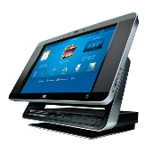C�ch vệ sinh m�y t�nh để b�n - Với c�c thiết bị c�ng nghệ cao như m�y t�nh th� điều kiện m�i trường l� yếu tố quan trọng để đ�nh gi� độ bền, 2 trong số c�c yếu tố đang l�m hỏng c�c thiết bị điện tử mỗi năm ở Việt Nam đ� l� bụi bẩn v� thời tiết n�ng ẩm. Sau một thời gian sử dụng thì chắc hẳn chi�́c PC l�u năm của bạn sẽ bị bám bụi cả ở b�n trong l�̃n b�n ngoài đặc biệt l� ở những chi�́c quạt tản nhiệt v� lỗ th�ng gi�. Hiển nhi�n l� khi đ� đường lưu th�ng khí sẽ bị cản v� những b�̣ ph�̣n b�n trong sẽ kh�ng được tản nhi�̣t tốt. Ch�ng cũng sẽ bị b�m bụi v� phải hoạt động ở nhiệt độ cao. Điều n�y chắc chắn sẽ l�m cho c�c th�nh phần phần cứng bị giảm tuổi thọ kh� nhiều. Bởi vậy, vệ sinh m�y t�nh l� một việc quan trọng v� bạn n�n thực hiện một c�ch thường xuy�n.
Tần suất vệ sinh m�y t�nh
T�y thuộc v�o điều kiện v� m�i trường đặt m�y m� bạn n�n tiến h�nh vệ sinh m�y t�nh nhiều hay �t. Vị tr� đặt case cũng kh� quan trọng: Nếu bạn đặt case ở nền nh� th� chắc chắn l� n� sẽ dễ bị b�m bụi hơn so với khi đặt case ở vị tr� cao như ở tr�n b�n. Khi đ� bụi sẽ kh� c� cơ hội lọt v�o case m�y của bạn hơn.
Nếu bạn c� vật nu�i trong nh� th� cũng sẽ kh�ng c� lợi khi case m�y được đặt ở nền nh� v� l�ng của ch�ng sẽ dễ d�ng lọt v�o trong m�y.
Trong trường hợp bạn hay ăn uống b�n cạnh chiếc PC của m�nh th� l�m vệ sinh m�y t�nh thường xuy�n cũng l� một việc rất quan trọng.
Nếu những điều đ� n�i ở tr�n l� đ�ng với bạn, th� lời khuy�n cho bạn l� n�n vệ sinh m�y t�nh từ 3 đến 6 th�ng 1 lần. Khi cảm thấy m�y t�nh n�ng hơn b�nh thường th� cũng l� l�c bạn n�n mở th�ng m�y ra để kiểm tra c�c th�nh phần b�n trong v� thực hiện việc vệ sinh m�y t�nh.
C�c bước chuẩn bị
Bạn kh�ng n�n mở case trong khi PC đang chạy. Để đảm bảo an to�n cho chiếc PC th�n y�u của m�nh th� bạn h�y r�t tất cả c�c loại d�y c�p kết nối gắn với m�y t�nh như c�p USB, c�p �m thanh, c�p video v� đặc biệt l� c�p nguồn.
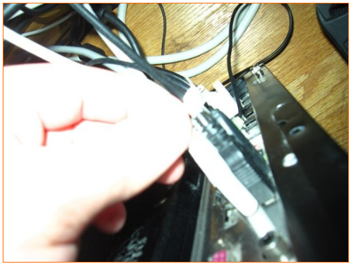Bạn cũng kh�ng n�n l�m vệ sinh m�y t�nh khi n� vẫn c�n điện, tốt nhất l� h�y r�t c�p nguồn ra v� chờ khoảng 2 đến 5 ph�t để tr�nh trường hợp PC vẫn c�n t�ch điện.
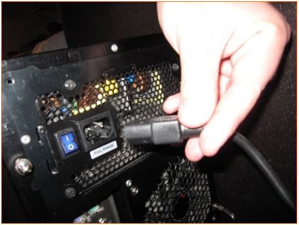
Tiếp theo, h�y chuyển m�y t�nh của m�nh đến một khu vực th�ng tho�ng v� đủ s�ng. Để tr�nh h�t phải bụi khi l�m vệ sinh m�y th� bạn n�n đeo khẩu trang.
C�c c�ng cụ
Trước khi vệ sinh m�y t�nh, bạn sẽ cần phải chuẩn bị một số dụng cụ để l�m vệ sinh. Tuyệt đối kh�ng n�n sử dụng m�y h�t bụi v� n� c� thể g�y ra hiện tượng t�ch điện v� g�y hại cho những th�nh phần quan trọng m�y như bo mạch chủ, card đồ họa v� RAM. Dưới đ�y l� một v�i c�ng cụ bạn cần chuẩn bị cho việc vệ sinh m�y t�nh.
- Bộ ốc v�t.
- B�nh xịt kh� n�n: Bạn c� thể t�m mua ở c�c cửa h�ng chuy�n b�n c�c linh kiện m�y t�nh.
- Khăn lau mềm.
- K�o.
- B�ng gạc.
- Keo tản nhiệt.
- D�y buộc c�p.
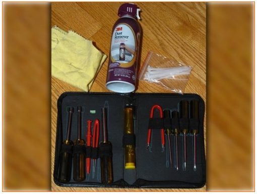Nếu c� thể, bạn h�y sử dụng một c�y b�t l�ng để c� thể phủi bụi ở những nơi m� kh� n�n kh�ng thể thổi tới được.
B�y giờ th� bạn đ� c� thể bắt đầu tiến h�nh c�ng việc vệ sinh m�y t�nh được rồi. Trước ti�n h�y mở case m�y t�nh.
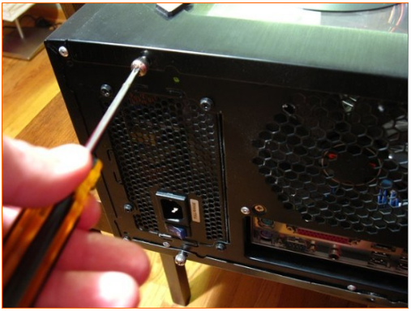Sau khi mở case, bạn h�y th�o tất cả c�c c�c loại c�p nối với bo mạch chủ.
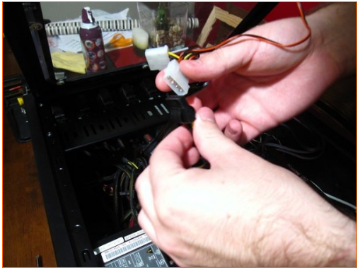
Để qu� tr�nh l�m vệ sinh m�y được dễ d�ng hơn th� bạn n�n th�o ra c�c th�nh phần phần cứng như RAM, card đồ họa v� ổ đĩa cứng để tiến h�nh vệ sinh từng phần.
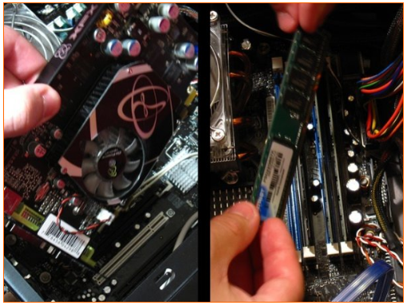
Việc th�o CPU l� kh�ng bắt buộc v� khi th�o CPU ra cũng đồng nghĩa với việc bạn phải thay lớp keo tản nhiệt. Nếu bạn c� keo tản nhiệt trong tay v� muốn th�o CPU th� h�y nhớ l�m sạch lớp keo tản nhiệt cũ tr�n CPU bằng vải mềm thấm cồn rồi mới b�i keo mới. Sau khi đ� ho�n th�nh c�ng việc vệ sinh m�y t�nh v� lắp đặt lại CPU, bạn h�y b�i l�n CPU một lớp keo tản nhiệt mới rồi mới lắp quạt tản nhiệt cho CPU.
Hầu hết người d�ng khi vệ sinh m�y t�nh thường kh�ng hay th�o CPU v� quạt tản nhiệt của n� v� cũng kh� kh� để bụi c� thể len lỏi v�o trong đ�. Tuy nhi�n lựa chọn vẫn thuộc về bạn.
Vệ sinh m�y
Để bắt đầu vệ sinh m�y t�nh, bạn h�y tiến h�nh l�m sạch c�c thiết bị phần cứng vừa được th�o ra. D�ng b�nh xịt kh� n�n để thổi v�o c�c khu vực bị b�m bụi. Với card đồ họa, bụi thường t�ch tụ xung quanh c�c cổng giao tiếp v� thế bạn n�n ch� � tới khu vực n�y khi vệ sinh card đồ họa. Để thổi bụi cho quạt tản nhiệt tr�n card đồ họa, bạn h�y sử dụng một c�y b�t đặt ở giữa c�c c�nh của quạt tản nhiệt để ngăn kh�ng cho n� quay khi thổi kh� n�n v�o trong đ�.
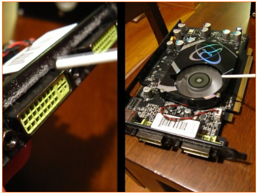Tiếp theo h�y bắt đầu vệ sinh b�n trong case m�y t�nh. Trước ti�n l� c�c khe cắm RAM, bạn h�y đặt đầu thổi bụi của b�nh xịt kh� n�n v�o c�c khe cắm RAM sau đ� bắt đầu thổi bụi. Khi thổi bụi, bạn h�y di chuyển đầu thổi bụi dọc theo khe cắm RAM để c� thể l�m sạch bụi một c�ch to�n bộ cho khe cắm RAM. Bạn h�y tiếp tục l�m như thế cho c�c khe cắm RAM c�n lại.
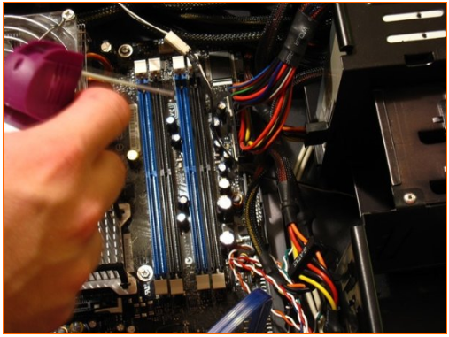
Tiếp theo h�y l�m sạch c�c thiết bị lớn hơn ở b�n trong case m�y như quạt CPU v� bộ nguồn. Cũng giống như khi thổi bụi cho quạt tản nhiệt tr�n card đồ họa, bạn n�n sử dụng một c�y b�t, để ngăn kh�ng cho quạt tản nhiệt quay khi thổi kh� n�n.
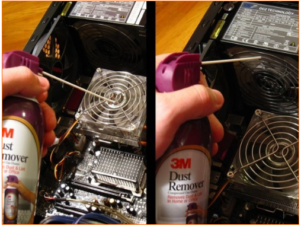
Bạn cũng c� thể l�m sạch c�c quạt tản nhiệt bằng c�ch d�ng tăm b�ng lau c�c c�nh quạt. C�ng việc n�y hơi mất thời gian nhưng c�c quạt tản nhiệt sẽ sạnh l�n tr�ng thấy.
Tiếp tục sử dụng b�nh kh� n�n để thổi bụi to�n bộ c�c th�nh phần b�n trong th�ng m�y. Bụi c� thể sẽ rơi xuống ph�a dưới của case, bạn c� thể sử dụng b�nh xịt kh� n�n để thổi bụi đi hoặc bạn cũng c� thể d�ng một chiếc khăn lau ẩm để lau bụi.
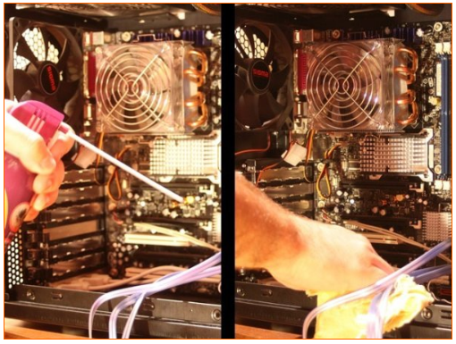Bạn cũng đừng n�n qu�n l�m sạch c�c quạt tản nhiệt, lỗ th�ng hơi v� c�c khay chứa của case.
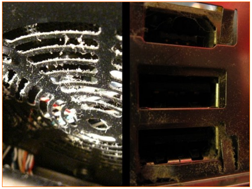
Thắt gọn c�p
Bước tiếp theo n�y l� kh�ng bắt buộc. Kh�ng được gọn g�ng ở b�n trong như c�c PC được sản xuất một c�ch h�ng loạt, b�n trong case của c�c PC được người d�ng tự lắp r�p sẽ kh� lộn xộn với c�c loại d�y c�p. V� vậy sẽ tốt hơn cho việc tản nhiệt trong m�y nếu c�c loại d�y c�p được sắp xếp một c�ch gọn g�ng.
Để thực hiện việc n�y bạn sẽ cần sử dụng d�y buộc c�p. D�y buộc c�p cũng c� b�n rất nhiều ở c�c cửa h�ng m�y t�nh, bạn h�y chọn loại d�y đủ d�i để buộc c�p.
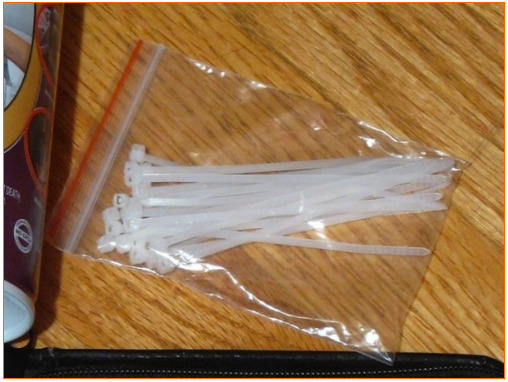Bạn h�y ngắt tất cả c�c loại c�p ra để tiện cho việc gom c�p.
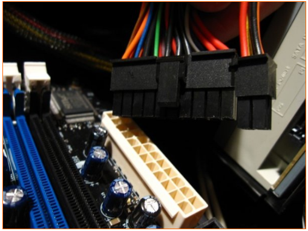
Sau đ� bạn h�y gom c�c d�y c�p lại sao cho gọn g�ng bằng c�ch d�ng d�y buộc c�p để buộc ch�ng lại c�c. Khi sử dụng d�y buộc c�p, bạn h�y buộc d�y b�n ngo�i d�y sau đ� thắt chặt d�y buộc c�p hết mức c� thể. Tiếp theo, bạn c� thể d�ng k�o để cắt c�c đoạn d�y thừa.

Sau khi gom c�c loại d�y c�p, bạn h�y sắp xếp lại ch�ng để th�ng m�y được gọn g�ng.
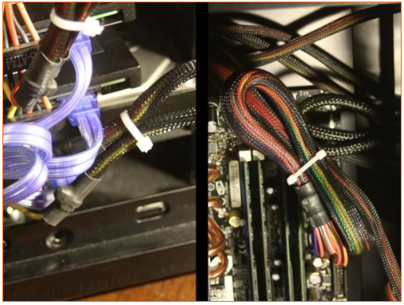
Lắp lại m�y
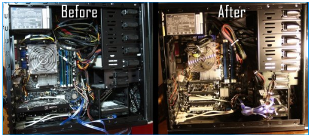Tiếp theo, bạn h�y cắm c�c loại d�y c�p v�o đ�ng vị tr� của ch�ng. Nếu kh�ng nhớ r� vị tr� của c�c loại c�p bạn h�y tham khảo t�i liệu đi kẻm theo m�y t�nh để tr�nh việc cắm c�p sai. Sau đ� h�y tiến h�nh lắp đặt lại c�c th�nh phần phần cứng đ� được th�o ra trước đ� như card m�n h�nh v� RAM. Bước cuối c�ng l� đ�ng case v� cắm c�c loại d�y kết nối lại v�o case.
Nguồn: http://thuthuatpc.us